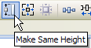
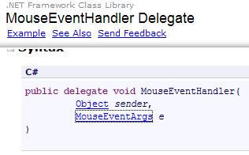
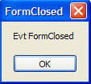
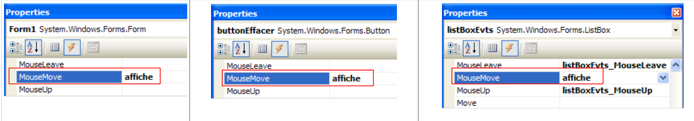
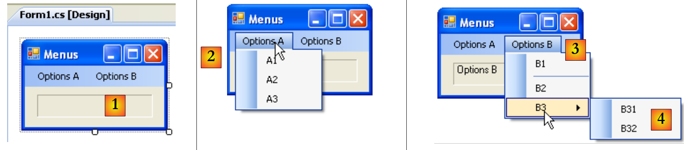

7. Interfaces gráficas com C# e VS.NET
7.1. Noções básicas sobre interfaces gráficas de utilizador
7.1.1. Um primeiro projeto
Vamos criar um primeiro projeto de «Aplicação Windows»:
 |
- [1]: Criar um novo projeto
- [2]: Tipo de aplicação Windows
- [3]: o nome do projeto não é importante neste momento
- [4]: o projeto foi criado
 |
- [5]: guardar a solução atual
- [6]: nome do projeto
- [7]: ficheiro da solução
- [8]: nome da solução
- [9]: será criada uma pasta para a solução [Chap5]. Os seus projetos ficarão em subpastas.
 |
- [10]: projeto [01] na solução [Chap5] :
- [Program.cs] é a classe principal do projeto
- [Form1.cs] é o ficheiro fonte que gere o comportamento da janela [11]
- [Form1.Designer.cs] é o ficheiro fonte que encapsula informações sobre os componentes da janela [11]
- [11]: ficheiro [Form1.cs] no modo de design
- [12]: a aplicação gerada pode ser executada com (Ctrl-F5). A janela [Form1] é apresentada. Pode ser movida, redimensionada e fechada. Os elementos básicos de uma janela gráfica estão agora disponíveis.
A classe principal [Program.cs] é a seguinte:
using System;
using System.Windows.Forms;
namespace Chap5 {
static class Program {
/// <summary>
/// The main entry point for the application.
/// </summary>
[STAThread]
static void Main() {
Application.EnableVisualStyles();
Application.SetCompatibleTextRenderingDefault(false);
Application.Run(new Form1());
}
}
}
- linha 2: as aplicações com formulários utilizam o namespace System.Windows.Forms.
- linha 4: o namespace original foi renomeado para Chap5.
- linha 10: quando o projeto é executado (Ctrl-F5), o método [Main] é executado.
- linhas 11-13: a aplicação Classroom pertence ao System.Windows.Forms. Contém métodos estáticos para iniciar e parar aplicações gráficas do Windows.
- linha 11: opcional - permite atribuir estilos visuais diferentes aos controlos colocados num formulário
- linha 12: opcional - define o motor de renderização para textos de controlo: GDI+ (true), GDI (false)
- linha 13: a única linha essencial no método [Main]: instancia a classe [Form1], que é a classe do formulário, e instrui-a a ser executada.
O ficheiro fonte [Form1.cs] é o seguinte:
using System;
using System.Windows.Forms;
namespace Chap5 {
public partial class Form1 : Form {
public Form1() {
InitializeComponent();
}
}
}
- linha 5: o formulário Form1 deriva da classe [System.Windows.Forms.Form], que é a classe pai de todas as janelas. A palavra-chave partial indica que a classe é parcial e pode ser completada por outros ficheiros de código-fonte. É o que acontece aqui, onde a classe Form1 está dividida em dois ficheiros:
- [Form1.cs]: onde se encontra o comportamento do formulário, incluindo os seus manipuladores de eventos
- [Form1.Designer.cs]: contém os componentes do formulário e as suas propriedades. Este ficheiro é regenerado sempre que o utilizador modifica a janela no modo [design].
- linhas 6-8: construtor da classe Form1
- linha 7: chama o InitializeComponent. Este método não está presente em [Form1.cs]. Encontra-se em [Form1.Designer.cs].
O ficheiro fonte [Form1.Designer.cs] é o seguinte:
namespace Chap5 {
partial class Form1 {
// <summary>
// Required designer variable.
// </summary>
private System.ComponentModel.IContainer components = null;
//tax <summary>
//tax Clean up any resources being used.
//tax </summary>
//tax <param name="disposing">true if managed resources should be disposed; otherwise, false.</param>
protected override void Dispose(bool disposing) {
if (disposing && (components != null)) {
components.Dispose();
}
base.Dispose(disposing);
}
#region Windows Form Designer generated code
//tax <summary>
//a IImpot object Required method for Designer support - do not modify
//Tax the contents of this method with the code editor.
/// </summary>
private void InitializeComponent() {
this.SuspendLayout();
///
///
///
this.AutoScaleDimensions = new System.Drawing.SizeF(6F, 13F);
this.AutoScaleMode = System.Windows.Forms.AutoScaleMode.Font;
this.ClientSize = new System.Drawing.Size(196, 98);
this.Name = "Form1";
this.Text = "Form1";
this.ResumeLayout(false);
}
#endregion
}
}
- linha 2: a classe é sempre Form1. Note que já não é necessário repetir que deriva da classe Form.
- linhas 25-37: o método InitializeComponent chamado pelo construtor da classe [Form1]. Este método cria e inicializa todos os componentes do formulário. É regenerado sempre que o formulário é alterado no modo [design]. É criada uma secção chamada região, para o delimitar nas linhas 19-39. O programador não deve adicionar qualquer código a esta região: será sobrescrito na próxima vez que for regenerado.
Inicialmente, é mais simples ignorar o código [Form1.Designer.cs]. Este é gerado automaticamente e constitui a tradução para a linguagem C# das escolhas feitas pelo programador no modo [design]. Vejamos um primeiro exemplo:
 |
- [1]: Selecione o modo [design] clicando duas vezes no ficheiro [Form1.cs]
- [2]: clique com o botão direito do rato no formulário e selecione [Propriedades]
- [3]: Janela de propriedades do [Form1]
- [4]: a propriedade [Text] representa o título da janela
- [5]: a alteração na propriedade [Text] é tida em conta no modo [design], bem como no código-fonte [Form1.Designer.cs]:
private void InitializeComponent() {
this.SuspendLayout();
...
this.Text = "Mon 1er formulaire";
...
}
7.1.2. Um segundo projeto
7.1.2.1. O formulário
Estamos a iniciar um novo projeto chamado 02. Para tal, seguimos o procedimento descrito acima para criar um projeto. A janela a ser criada é a seguinte:
 |
Os componentes do formulário são os seguintes:
n.º | nome | tipo | função |
1 | rótuloSaisie | Rótulo | um texto |
2 | caixa de texto de introdução | Caixa de Texto | um campo de entrada |
3 | botãoExibir | Botão | para exibir o conteúdo do campo de entrada textBoxSaisie numa caixa de diálogo |
Para criar esta janela, proceda da seguinte forma:
 |
- [1]: clique com o botão direito do rato no formulário, fora de qualquer componente, e selecione a opção [Propriedades]
- [2]: a janela de propriedades da janela aparece no canto inferior direito do Visual Studio
As propriedades do formulário incluem:
para definir a cor de fundo da janela | |
para definir a cor dos desenhos ou do texto na janela | |
para associar um menu à janela | |
para atribuir um título à janela | |
para definir o tipo de janela | |
para definir o tipo de letra a utilizar no | |
para definir o nome da janela |
Aqui, definimos as propriedades Texto e Nome:
Entradas e botões - 1 | |
frmSaisiesBoutons |
 |
- [1]: escolha a caixa de ferramentas [Common Controls] entre as caixas de ferramentas disponíveis no Visual Studio
- [2, 3, 4]: clique duas vezes nos componentes [Label], [Button] e [TextBox] sucessivamente
- [5]: os três componentes estão no formulário
Para alinhar e dimensionar os componentes corretamente, pode utilizar os itens da barra de ferramentas:
 | |||||||||
 | |||||||||
O princípio da formatação é o seguinte:
- selecione os componentes a formatar em conjunto (mantenha premida a tecla Ctrl enquanto clica para selecionar os componentes)
- selecione o tipo de formatação desejado:
- (continuação)
- As opções de alinhamento permitem que os componentes sejam alinhados à parte superior, inferior, esquerda, direita, centro, etc.
- As opções «Tamanho igual» permitem que os componentes tenham a mesma altura ou largura
- a opção Espaçamento horizontal permite que os componentes sejam alinhados horizontalmente, com intervalos entre eles da mesma largura. O mesmo se aplica à opção Espaçamento vertical para alinhar verticalmente.
- a opção «Centralizar» permite centralizar um componente horizontalmente (Horizontalmente) ou verticalmente (Verticalmente) no
Depois de os componentes terem sido colocados, definimos as suas propriedades. Para tal, clique com o botão direito do rato no componente e selecione a opção Propriedades :
 |
- [1]: selecione o componente para abrir a janela de propriedades. Nesta janela, altere as seguintes propriedades: nome: labelSaisie, texto: Input
- [2]: proceda da mesma forma: nome: textBoxSaisie, texto: não insira nada
- [3] : nome : buttonAfficher, texto : Ver
- [4]: a própria janela: nome: frmSaisiesBoutons, texto: Entradas e botões - 1
- [5]: execute (Ctrl-F5) o projeto para ter uma primeira visão da janela em ação.
O que foi feito no modo [design] foi traduzido para código [Form1.Designer.cs]:
namespace Chap5 {
partial class frmSaisiesBoutons {
...
private System.ComponentModel.IContainer components = null;
...
private void InitializeComponent() {
this.labelSaisie = new System.Windows.Forms.Label();
this.buttonAfficher = new System.Windows.Forms.Button();
this.textBoxSaisie = new System.Windows.Forms.TextBox();
this.SuspendLayout();
///
///
///
this.labelSaisie.AutoSize = true;
this.labelSaisie.Location = new System.Drawing.Point(12, 19);
this.labelSaisie.Name = "labelSaisie";
this.labelSaisie.Size = new System.Drawing.Size(35, 13);
this.labelSaisie.TabIndex = 0;
this.labelSaisie.Text = "Saisie";
///
///
///
this.buttonAfficher.Location = new System.Drawing.Point(80, 49);
this.buttonAfficher.Name = "buttonAfficher";
this.buttonAfficher.Size = new System.Drawing.Size(75, 23);
this.buttonAfficher.TabIndex = 1;
this.buttonAfficher.Text = "Afficher";
this.buttonAfficher.UseVisualStyleBackColor = true;
this.buttonAfficher.Click += new System.EventHandler(this.buttonAfficher_Click);
///
// Form1
// labelSaisie
this.textBoxSaisie.Location = new System.Drawing.Point(80, 19);
this.textBoxSaisie.Name = "textBoxSaisie";
this.textBoxSaisie.Size = new System.Drawing.Size(100, 20);
this.textBoxSaisie.TabIndex = 2;
// buttonAfficher
// textBoxSaisie
// frmSaisiesBoutons
this.AutoScaleDimensions = new System.Drawing.SizeF(6F, 13F);
this.AutoScaleMode = System.Windows.Forms.AutoScaleMode.Font;
this.ClientSize = new System.Drawing.Size(292, 118);
this.Controls.Add(this.textBoxSaisie);
this.Controls.Add(this.buttonAfficher);
this.Controls.Add(this.labelSaisie);
this.Name = "frmSaisiesBoutons";
this.Text = "Saisies et boutons - 1";
this.ResumeLayout(false);
this.PerformLayout();
}
private System.Windows.Forms.Label labelSaisie;
private System.Windows.Forms.Button buttonAfficher;
private System.Windows.Forms.TextBox textBoxSaisie;
}
}
- linhas 53-55: os três componentes deram origem a três campos privados na classe [Form1]. Note-se que os nomes destes campos são os nomes atribuídos aos componentes no modo [design]. O mesmo se aplica à linha 2, que corresponde à própria classe.
- linhas 7-9: são criados os três objetos do tipo [Label], [TextBox] e [Button]. Estes são utilizados para gerir componentes visuais.
- linhas 14-19: configuração do rótulo labelSaisie
- linhas 23-29: configuração do botão buttonAfficher
- linhas 33-36: configuração do campo de entrada textBoxSaisie
- linhas 40-47: configuração do formulário frmSaisiesBoutons. As linhas 43-45 mostram como adicionar componentes ao formulário.
Este código é fácil de compreender. Por isso, é possível criar formulários através de código sem recorrer ao modo [design]. A documentação do MSDN do Visual Studio apresenta inúmeros exemplos disso. Dominar este código permite-lhe criar formulários em tempo de execução: por exemplo, criar um formulário instantaneamente para atualizar uma tabela de base de dados, sendo que a estrutura da tabela só é identificada em tempo de execução.
Resta apenas escrever o procedimento para gerir um clique na View. Selecione o botão para aceder à janela de propriedades. Esta janela possui várias separadores:
 |
- [1]: lista de propriedades por ordem alfabética
- [2]: eventos de controlo
As propriedades e eventos de controlo podem ser acedidos por categoria ou por ordem alfabética:
- [3]: Propriedades ou eventos por categoria
- [4]: Propriedades ou eventos por ordem alfabética
Os eventos nas categorias para o botão Afficher são os seguintes:
 |
- [1]: a coluna da esquerda da janela lista os eventos possíveis no botão. Um clique num botão corresponde ao evento Click.
- [2]: a coluna da direita contém o nome do procedimento chamado quando o evento correspondente ocorre.
- [3]: se clicar duas vezes na célula do evento Click, passamos automaticamente para a janela de código para escrever o manipulador de eventos Click do botão buttonAfficher :
using System;
using System.Windows.Forms;
namespace Chap5 {
public partial class frmSaisiesBoutons : Form {
public frmSaisiesBoutons() {
InitializeComponent();
}
private void buttonAfficher_Click(object sender, EventArgs e) {
}
}
}
- linhas 10-12: o esqueleto do manipulador de eventos Clique no botão chamado buttonAfficher. Deve ter em conta os seguintes pontos:
- o método é nomeado da seguinte forma: eventName_ComponentName
- o método é privado. Recebe dois parâmetros:
- sender : é o objeto que desencadeou o evento. Se o procedimento for executado após um clique no buttonAfficher, sender será igual a buttonAfficher. É possível que o buttonAfficher_Click seja executado a partir de outro procedimento. Este procedimento teria então a liberdade de definir o objeto sender à sua escolha.
- EventArgs: um objeto que contém informações sobre o evento. Para um evento Click, não contém nada. Para um evento de movimento do rato, conterá as coordenadas (X,Y) do rato.
- Não utilizaremos nenhum destes parâmetros aqui.
Escrever um manipulador de eventos implica completar o esboço de código anterior. Com o Ici, pretendemos apresentar uma caixa de diálogo com o conteúdo da textBoxSaisie, caso esta não esteja vazia [1], ou uma mensagem de erro, caso contrário [2]:
 |
O código para o fazer poderia ser o seguinte:
private void buttonAfficher_Click(object sender, EventArgs e) {
// displays the text entered in the TextBox textboxSaisie
string texte = textBoxSaisie.Text.Trim();
if (texte.Length != 0) {
MessageBox.Show("Texte saisi= " + texte, "Vérification de la saisie", MessageBoxButtons.OK, MessageBoxIcon.Information);
} else {
MessageBox.Show("Saissez un texte...", "Vérification de la saisie", MessageBoxButtons.OK, MessageBoxIcon.Error);
}
A classe MessageBox é utilizada para apresentar mensagens numa janela. Aqui, utilizámos o método Show:
public static DialogResult Show(string text, string caption, MessageBoxButtons buttons, MessageBoxIcon icon);
com
a mensagem a ser exibida | |
título da janela | |
botões na janela | |
o ícone na |
Os botões podem assumir os seus valores a partir das seguintes constantes (prefixadas por MessageBoxButtons, conforme mostrado na linha 7) acima:
botões | |
 | |
 | |
 | |
 | |
 | |
 |
O ícone pode obter os seus valores a partir das seguintes constantes (prefixadas por MessageBoxIcon, conforme mostrado na linha 10) acima:
 | idem Parar | ||
idem Aviso |  | ||
idem Asterisco |  | ||
 | idem Mão | ||
 |
O método Show é um método estático que devolve um resultado do tipo [System.Windows.Forms.DialogResult], que é uma enumeração:

Para descobrir qual o botão que o utilizador premuiu para fechar a MessageBox, escrevemos:
7.1.2.2. Código de gestão de eventos
Para além do buttonAfficher_Click que escrevemos, o Visual Studio gerou no método InitializeComponents de [Form1.Designer.cs], que cria e inicializa os componentes do formulário, a seguinte linha:
this.buttonAfficher.Click += new System.EventHandler(this.buttonAfficher_Click);
Click é uma classe de evento do botão [1, 2, 3]:
 |
- [5]: a declaração do evento [Control.Click] [4]. Isto mostra que o evento Click não é específico da classe [Button]. Pertence à classe [Control], a classe pai da classe [Button].
- EventHandler é um protótipo (um modelo) de um método chamado delegado. Voltaremos a este assunto mais tarde.
- event é uma palavra-chave que restringe a funcionalidade do delegado EventHandler: um objeto delegado tem funcionalidades mais ricas do que um evento.
Visite o delegado EventHandler, que é definido da seguinte forma:
 |
O designador de eventos do delegado designa um modelo de método:
- com o tipo como primeiro parâmetro Object
- cujo segundo parâmetro é um EventArgs
- que não retorna nenhum resultado
Este é o caso do método para gerir cliques no botão Afficher gerado pelo Visual Studio:
private void buttonAfficher_Click(object sender, EventArgs e);
O buttonAfficher_Click corresponde ao protótipo definido pelo EventHandler. Para criar um EventHandler, proceda da seguinte forma:
EventHandler evtHandler=new EventHandler(méthode correspondant au prototype défini par le type EventHandler);
Uma vez que o botãoAfficher_Click corresponde ao protótipo definido pelo EventHandler, podemos escrever:
Uma variável do tipo delegado é, na verdade, uma lista de referências a métodos como o delegado. Para adicionar um novo método M à variável evtHandler acima, usamos a sintaxe:
A notação += pode ser utilizada mesmo que evtHandler seja uma lista vazia.
Voltemos à linha em [InitializeComponent] que adiciona um manipulador de eventos ao evento Click do objeto buttonAfficher:
this.buttonAfficher.Click += new System.EventHandler(this.buttonAfficher_Click);
Esta instrução adiciona um EventHandler à lista de métodos em buttonAfficher.Click. Estes métodos serão chamados sempre que for detetado um clique no componente buttonAfficher. Normalmente, existe apenas um. É chamado de «manipulador de eventos».
Voltemos à assinatura do EventHandler:
private delegate void EventHandler(object sender, EventArgs e);
O segundo parâmetro do delegado é um objeto do tipo EventArgs ou de uma classe derivada. O tipo EventArgs é muito genérico e, na verdade, não fornece nenhuma informação sobre o evento que ocorreu. Para um clique num botão, isto é suficiente. Para um movimento do rato num formulário, teríamos um MouseMove da classe [Form] definido por:
O delegado MouseEventHandler é definido como:
 |
Esta é uma função de assinatura delegada void f (object, MouseEventArgs). A classe MouseEventArgs é definida por:
 |
A classe MouseEventArgs é mais rica do que a EventArgs. Por exemplo, podemos determinar as coordenadas X e Y do rato no momento em que o evento ocorre.
7.1.2.3. Conclusão
A partir dos dois projetos estudados, podemos concluir que, uma vez que a GUI tenha sido criada com o Visual Studio, a tarefa do programador consiste principalmente em escrever os manipuladores de eventos que pretende gerir para essa GUI. O código é gerado automaticamente pelo Visual Studio. Este código, que pode ser complexo, pode ser ignorado numa primeira fase. Mais tarde, no entanto, o seu estudo poderá proporcionar uma melhor compreensão de como criar e gerir formulários.
7.2. Componentes básicos
Apresentamos agora uma série de aplicações que envolvem os componentes mais comuns, a fim de descobrir os seus principais métodos e propriedades. Para cada aplicação, apresentamos a interface gráfica e o código de interesse, principalmente o dos manipuladores de eventos.
7.2.1. Formulário Form
Começaremos por apresentar o componente essencial, o formulário no qual se colocam os componentes. Já apresentámos algumas das suas propriedades básicas. Vamos agora abordar alguns dos eventos mais importantes do formulário.
o formulário está a carregar | |
o formulário está a ser fechado | |
o formulário está fechado |
O evento Load ocorre antes de o formulário ser apresentado. O evento Closing ocorre quando o formulário está a ser fechado. Também é possível impedir este encerramento através de programação.
Criamos um formulário de nome Form1 sem componentes:
 |
- [1]: o formulário
- [2]: os três eventos abordados
O código para [Form1.cs] é o seguinte:
using System;
using System.Windows.Forms;
namespace Chap5 {
public partial class Form1 : Form {
public Form1() {
InitializeComponent();
}
private void Form1_Load(object sender, EventArgs e) {
// initial form loading
MessageBox.Show("Evt Load", "Load");
}
private void Form1_FormClosing(object sender, FormClosingEventArgs e) {
// the form is closing
MessageBox.Show("Evt FormClosing", "FormClosing");
// confirmation requested
DialogResult réponse = MessageBox.Show("Voulez-vous vraiment quitter l'application", "Closing", MessageBoxButtons.YesNo, MessageBoxIcon.Question);
if (réponse == DialogResult.No)
e.Cancel = true;
}
private void Form1_FormClosed(object sender, FormClosedEventArgs e) {
// the form will be closed
MessageBox.Show("Evt FormClosed", "FormClosed");
}
}
}
Utilizamos o MessageBox para sermos notificados de eventos.
linha 10: O evento Load ocorrerá quando a aplicação, antes mesmo de o formulário ser apresentado: |  |
linha 15: O evento FormClosing ocorrerá quando o utilizador fechar a janela. |  |
linha 19: Em seguida, perguntamos-lhe se realmente deseja sair o : |  |
linha 20: Se ele responder Não, definimos a propriedade Cancel do o evento CancelEventArgs que o método recebeu no parâmetro. Se definirmos esta propriedade como False, o encerramento da janela é abortado; caso contrário, continua. O evento FormClosed ocorrerá então: |  |
7.2.2. Rótulos e caixas de entrada TextBox
Já nos deparámos com estes dois componentes. Label é um componente de texto e TextBox um componente de campo de entrada. A sua principal propriedade é Text, que designa o conteúdo do campo de entrada ou o texto do rótulo. Esta propriedade é de leitura/gravação.
O evento normalmente utilizado para o TextBox é o TextChanged, que indica que o utilizador alterou o campo de entrada. Aqui está um exemplo que utiliza o TextChanged para acompanhar as alterações num campo de entrada:
 |
n.º | tipo | nome | função |
1 | Caixa de Texto | textBoxSaisie | campo de entrada |
2 | Rótulo | labelControle | exibe o texto de 1 em tempo real AutoSize=False, Text=(nada) |
3 | Botão | botãoApagar | para eliminar os campos 1 e 2 |
4 | Botão | botãoQuitter | para sair da aplicação |
O código para esta aplicação é:
using System.Windows.Forms;
namespace Chap5 {
public partial class Form1 : Form {
public Form1() {
InitializeComponent();
}
private void textBoxSaisie_TextChanged(object sender, System.EventArgs e) {
// the content of TextBox has changed - copy it to Label labelControle
labelControle.Text = textBoxSaisie.Text;
}
private void buttonEffacer_Click(object sender, System.EventArgs e) {
// delete the contents of the input box
textBoxSaisie.Text = "";
}
private void buttonQuitter_Click(object sender, System.EventArgs e) {
// click on the Quit button - exit the application
Application.Exit();
}
private void Form1_Shown(object sender, System.EventArgs e) {
// focus on the input field
textBoxSaisie.Focus();
}
}
}
- linha 24: o evento [Form].Shown ocorre quando o formulário é exibido
- linha 26: o foco (para entrada) é colocado no componente textBoxSaisie.
- linha 9: o evento [TextBox].TextChanged ocorre sempre que o conteúdo de um componente TextBox é alterado
- linha 11: o conteúdo do componente [TextBox] é copiado para o componente [Label]
- linha 14: gere o clique no botão [Delete]
- linha 16: colocamos a string vazia no componente [TextBox]
- linha 19: gere o clique no botão [Quit]
- linha 21: para encerrar a aplicação em execução. Lembre-se de que o Application é utilizado para iniciar a aplicação no método [Main] de [Form1.cs]:
static void Main() {
Application.EnableVisualStyles();
Application.SetCompatibleTextRenderingDefault(false);
Application.Run(new Form1());
}
O exemplo seguinte utiliza uma caixa de texto multilinha:
 |
A lista de controlos é a seguinte:
n.º | tipo | nome | função |
1 | Caixa de Texto | textBoxLines | campo de entrada multilinha Multiline=true, ScrollBars=Both, AcceptReturn=True, AcceptTab=True |
2 | TextBox | textBoxLigne | campo de entrada de linha única |
3 | Botão | buttonAjouter | Adiciona o conteúdo de 2 para 1 |
Para tornar uma TextBox multilinha, defina as seguintes propriedades do controlo:
para aceitar várias linhas de texto | |
para solicitar que o controlo tenha barras de deslocamento (Horizontal, Vertical, Both) ou não (None) | |
se for igual a true, a tecla Enter saltará para a linha | |
se for verdadeiro, a tecla Tab irá gerar uma tabulação no texto |
A aplicação permite que as linhas sejam digitadas diretamente em [1] ou adicionadas através de [2] e [3].
O código da aplicação é o seguinte:
using System.Windows.Forms;
using System;
namespace Chap5 {
public partial class Form1 : Form {
public Form1() {
InitializeComponent();
}
private void buttonAjouter_Click(object sender, System.EventArgs e) {
// add the content of textBoxLigne to that of textBoxLignes
textBoxLignes.Text += textBoxLigne.Text+Environment.NewLine;
textBoxLigne.Text = "";
}
private void Form1_Shown(object sender, EventArgs e) {
// focus on the input field
textBoxLigne.Focus();
}
}
}
- linha 18: quando o formulário é exibido (evt Shown), coloca o foco no campo de entrada textBoxLigne
- linha 10: gere o clique no botão [Adicionar]
- linha 12: o texto do campo de entrada textBoxLigne é adicionado ao texto no campo de entrada textBoxLignes, seguido de um avanço de linha.
- linha 13: o texto do campo de entrada textBoxLigne é eliminado
7.2.3. Listas suspensas ComboBox
Criamos o seguinte formulário:
 |
n.º | tipo | nome | função |
1 | ComboBox | comboNomes | contém cadeias de caracteres DropDownStyle=DropDownList |
Um componente ComboBox é uma lista suspensa com um campo de entrada: o utilizador pode selecionar um item em (2) ou digitar texto em (1). Existem três tipos de ComboBox definidos pela propriedade DropDownStyle:
lista não suspensa com zona de edição | |
lista suspensa com zona de edição | |
lista suspensa sem zona de edição |
Por predefinição, o tipo de um ComboBox é DropDown.
A classe ComboBox de um único fabricante:
cria uma lista suspensa vazia |
Os elementos da ComboBox estão disponíveis na propriedade Items :
Esta é uma propriedade indexada, em que Items[i] designa o elemento i do Combo. É de leitura apenas.
Ou C uma caixa de combinação e C.Items a sua lista de elementos. Temos as seguintes propriedades:
número de elementos do combo | |
elemento i da lista | |
adiciona o objeto o como último elemento do combo | |
adiciona uma matriz de objetos ao final de um combo | |
adiciona o objeto o à posição i do combo | |
remove o elemento i da lista suspensa | |
remove o objeto o da lista suspensa | |
elimina todos os elementos da lista suspensa | |
retorna a posição i do objeto o no combo | |
índice do item selecionado | |
item selecionado | |
texto exibido para o item selecionado | |
texto exibido para o item selecionado |
Pode ser surpreendente que uma caixa combinada possa conter objetos enquanto exibe visualmente cadeias de caracteres. Se uma ComboBox contiver um objeto obj, exibe a cadeia de caracteres obj.ToString(). Lembre-se de que todos os objetos têm um método ToString herdado da classe Object, que gera uma cadeia de caracteres «representativa» do objeto.
O item selecionado na caixa combinada C é C.SelectedItem ou C.Items[C.SelectedIndex], onde C.SelectedIndex é o número do elemento selecionado, começando por zero para o primeiro elemento. O texto selecionado pode ser obtido de várias formas: C.SelectedItem.Text, C.Text
Quando um item é selecionado na lista suspensa, ocorre o evento SelectedIndexChanged, que pode então ser utilizado para notificar o utilizador de uma alteração na seleção da lista suspensa. Na aplicação seguinte, utilizamos este evento para apresentar o item que foi selecionado na lista.
 |
O código da aplicação é o seguinte:
using System.Windows.Forms;
namespace Chap5 {
public partial class Form1 : Form {
private int previousSelectedIndex=0;
public Form1() {
InitializeComponent();
// combo filling
comboBoxNombres.Items.AddRange(new string[] { "zéro", "un", "deux", "trois", "quatre" });
// select item no. 0
comboBoxNombres.SelectedIndex = 0;
}
private void comboBoxNombres_SelectedIndexChanged(object sender, System.EventArgs e) {
int newSelectedIndex = comboBoxNombres.SelectedIndex;
if (newSelectedIndex != previousSelectedIndex) {
// the selected item has changed - it is displayed
MessageBox.Show(string.Format("Elément sélectionné : ({0},{1})", comboBoxNombres.Text, newSelectedIndex), "Combo", MessageBoxButtons.OK, MessageBoxIcon.Information);
// note the new index
previousSelectedIndex = newSelectedIndex;
}
}
}
}
- linha 5: previousSelectedIndex armazena o último índice selecionado na lista suspensa
- linha 10: preenche o combo com uma matriz de cadeias de caracteres
- linha 12: o primeiro item é selecionado
- linha 15: o método executado sempre que o utilizador seleciona um item da lista suspensa. Ao contrário do que o nome possa sugerir, este evento ocorre mesmo que o item selecionado seja o mesmo que o anterior.
- linha 16: regista o índice do elemento selecionado
- linha 17: se for diferente do anterior
- linha 19: exibe o número e o texto do item selecionado
- linha 21: anota o novo índice
7.2.4. Componente ListBox
Propomos construir a seguinte interface:
 |
Os componentes desta janela são os seguintes:
n.º | tipo | nome | função/propriedades |
0 | Formulário | Form1 | formulário FormBorderStyle=FixedSingle (moldura não redimensionável) |
1 | Caixa de Texto | textBoxSaisie | campo de entrada |
2 | Botão | botãoAdicionar | botão para adicionar o conteúdo do campo de entrada [1] à lista [3] |
3 | ListBox | listBox1 | lista 1 SelectionMode=MultiExtended : |
4 | Caixa de Lista | listBox2 | lista 2 Modo de seleção=MultiSimple : |
5 | Botão | botão1para2 | transfere os itens selecionados da lista 1 para a lista 2 |
6 | Botão | botão2para1 | faz o contrário |
7 | Botão | botãoApagar1 | esvazia a lista 1 |
8 | Botão | botãoApagar2 | esvazia a lista 2 |
Os componentes ListBox têm um modo de seleção dos seus elementos que é definido pela sua propriedade SelectionMode :
apenas um item pode ser selecionado | |
é possível a seleção múltipla: mantendo a tecla SHIFT pressionada e clicando num elemento, a seleção é estendida do elemento selecionado anteriormente para o elemento atual. | |
seleção múltipla possível: um elemento pode ser selecionado ou desmarcado com um clique do rato ou premindo a barra de espaço. |
- O utilizador digita texto no campo 1 e adiciona-o à lista 1 utilizando o botão Adicionar (2). O campo de entrada (1) é então esvaziado e o utilizador pode adicionar um novo elemento.
- É possível transferir itens de uma lista para outra, selecionando o item a ser transferido numa das listas e escolhendo o botão de transferência apropriado 5 ou 6. O item transferido é adicionado ao final da lista de destino e removido da lista de origem.
- Pode clicar duas vezes num item da lista 1. Este item é então transferido para a caixa de edição e removido da lista 1.
Os botões são ativados ou desativados de acordo com as seguintes regras:
- o botão Adicionar só fica aceso se houver texto no campo de entrada
- o botão [5] para transferir a lista 1 para a lista 2 só fica aceso se houver um item selecionado na lista 1
- o botão [6] para transferir a lista 2 para a lista 1 só fica aceso se houver um item selecionado na lista 2
- os botões [7] e [8] para eliminar as listas 1 e 2 só ficam acesos se a lista a eliminar contiver itens.
Nas condições acima, todos os botões devem estar desativados quando a aplicação for iniciada. Trata-se dos botões Enabled, que devem então ser definidos como false. Isto pode ser feito na fase de design, o que irá gerar o código correspondente no InitializeComponent, ou pode ser feito manualmente no builder, conforme mostrado abaixo:
public Form1() {
InitializeComponent();
// --- initialisations complémentaires ---
// on inhibe un certain nombre de boutons
buttonAjouter.Enabled = false;
button1vers2.Enabled = false;
button2vers1.Enabled = false;
buttonEffacer1.Enabled = false;
buttonEffacer2.Enabled = false;
}
O estado do botão Adicionar é controlado pelo conteúdo do campo de entrada. Este é o TextChanged que nos permite acompanhar as alterações neste conteúdo:
private void textBoxSaisie_TextChanged(object sender, System.EventArgs e) {
// the content of textBoxSaisie has changed
// the Add button is only lit if the entry is non-empty
buttonAjouter.Enabled = textBoxSaisie.Text.Trim() != "";
}
O estado dos botões de transferência depende de ter ou não sido selecionado um item na lista que controlam:
private void listBox1_SelectedIndexChanged(object sender, System.EventArgs e) {
// an item has been selected
// switch on the 1 to 2 transfer button
button1vers2.Enabled = true;
}
private void listBox2_SelectedIndexChanged(object sender, System.EventArgs e) {
// an item has been selected
// switch on the 2 to 1 transfer button
button2vers1.Enabled = true;
}
O código associado ao clique no botão Adicionar é o seguinte:
private void buttonAjouter_Click(object sender, System.EventArgs e) {
// add a new element to list 1
listBox1.Items.Add(textBoxSaisie.Text.Trim());
// raz de la saisie
textBoxSaisie.Text = "";
// List 1 is not empty
buttonEffacer1.Enabled = true;
// return focus to input box
textBoxSaisie.Focus();
}
Repare no comando Focus para colocar o foco num controlo do formulário. O código associado aos cliques no botão Delete:
private void buttonEffacer1_Click(object sender, System.EventArgs e) {
// delete list 1
listBox1.Items.Clear();
// delete button
buttonEffacer1.Enabled = false;
}
private void buttonEffacer2_Click(object sender, System.EventArgs e) {
// delete list 2
listBox2.Items.Clear();
// delete button
buttonEffacer2.Enabled = false;
}
O código para transferir os itens selecionados de uma lista para outra:
private void button1vers2_Click(object sender, System.EventArgs e) {
// transfer the item selected in List 1 to List 2
transfert(listBox1, button1vers2, buttonEffacer1, listBox2, button2vers1, buttonEffacer2);
}
private void button2vers1_Click(object sender, System.EventArgs e) {
// transfer the item selected in List 2 to List 1
transfert(listBox2, button2vers1, buttonEffacer2, listBox1, button1vers2, buttonEffacer1);
}
Os dois métodos acima delegam a transferência de itens selecionados de uma lista para outra a um único método privado chamado transfer :
// transfer
private void transfert(ListBox l1, Button button1vers2, Button buttonEffacer1, ListBox l2, Button button2vers1, Button buttonEffacer2) {
// transfer selected items from list l1 to list l2
for (int i = l1.SelectedIndices.Count - 1; i >= 0; i--) {
// index of selected item
int index = l1.SelectedIndices[i];
// addition to l2
l2.Items.Add(l1.Items[index]);
// deletion in l1
l1.Items.RemoveAt(index);
}
// delete buttons
buttonEffacer2.Enabled = l2.Items.Count != 0;
buttonEffacer1.Enabled = l1.Items.Count != 0;
// transfer buttons
button1vers2.Enabled = false;
}
- linha b: o método transfer recebe seis parâmetros:
- uma referência à lista que contém os itens selecionados, aqui denominada l1. Quando a aplicação é executada, l1 é listBox1 ou listBox2. Exemplos de chamadas são apresentados nas linhas 3 e 8 dos procedimentos de transferência buttonXversY_Click.
- uma referência ao botão de transferência ligado à lista l1. Por exemplo, se l1 for listBox2, será button2to1 (ver chamada na linha 8)
- uma referência ao botão de eliminação da lista l1. Por exemplo, se l1 for listBox1, será buttonEffacer1 (ver chamada na linha 3)
- as outras três referências são semelhantes, mas referem-se a l2.
- linha d: a coleção [ListBox].SelectedIndices representa os índices dos elementos selecionados no componente [ListBox]. Isto é um:
- [ListBox].SelectedIndices.Count é o número de itens nesta coleção
- [ListBox].SelectedIndices[i] é o item n.º i nesta coleção
Percorremos a coleção na ordem inversa, começando pelo fim e terminando no início. Explicaremos porquê.
- linha f: índice de um item selecionado na lista l1
- linha h: este item é adicionado à lista l2
- linha j: e eliminado da lista l1. Como foi eliminado, deixa de estar selecionado. A coleção l1.SelectedIndices da linha d será recalculada. Perderá o elemento que acabou de ser eliminado. Todos os elementos subsequentes verão o seu número passar de n para n-1.
- Se o ciclo na linha (d) for ascendente e tiver acabado de processar o elemento n.º 0, processará então o elemento n.º 1. Ou seja, o elemento que era o n.º 1 antes da eliminação do elemento n.º 0 passará a ser o n.º 0. Será então ignorado pelo ciclo.
- Se o ciclo na linha (d) for descendente e tiver acabado de processar o elemento n.º n, processará então o elemento n.º n-1. Após a eliminação do elemento n.º n, o elemento n.º n-1 não altera o seu número. É, portanto, processado no ciclo seguinte.
- linhas m-n: o estado dos botões [Apagar] depende da presença ou não de itens nas listas associadas
- linha p: a lista l2 já não tem itens selecionados: desative o seu botão de transferência.
7.2.5. Caixas de seleção CheckBox, botões de opção ButtonRadio
Propomos escrever a seguinte aplicação:
 |
Os componentes da janela são os seguintes:
n.º | tipo | nome | função |
1 | GroupBox cf [6] | groupBox1 | um contêiner de componentes. Outros componentes podem ser inseridos nele. Texto=Botões de opção |
2 | Botão de opção | radioButton1 radioButton2 radioButton3 | 3 botões de opção - o radioButton1 tem Checked=True e Text=1 - o radioButton2 tem Text=2 - o radioButton3 tem Text=3 Os botões de opção no mesmo contentor, neste caso o GroupBox, são exclusivos entre si: apenas um deles está selecionado. |
3 | GroupBox | groupBox2 | |
4 | Caixa de seleção | caixa de seleção1 caixa de seleção 2 checkBox3 | 3 caixas de seleção. A caixa de seleção 1 tem Checked=True e Text=A - a caixa de seleção 2 tem Text=B - a caixa de seleção 3 tem Text=C |
5 | ListBox | listBoxValeurs | uma lista que exibe os valores dos botões de opção e das caixas de seleção sempre que ocorre uma alteração. |
6 | mostra onde encontrar o contentor GroupBox |
O evento de interesse para estes seis controlos é o CheckChanged, que indica que o estado da caixa de seleção ou do botão de opção mudou. Em ambos os casos, este estado é representado pela propriedade booleana Checked, que significa que o controlo está marcado. Aqui, utilizaremos apenas um método para tratar todos os seis eventos CheckChanged, o método poster. Para garantir que os seis eventos CheckChanged são geridos pelo mesmo método poster, pode proceder da seguinte forma:
Selecione o componente radioButton1 e clique com o botão direito do rato para aceder às suas propriedades:
 |
Nos eventos [1], associamos o poster [2] ao evento CheckChanged. Isto significa que queremos que o clique na opção A1 seja processado por um método chamado poster. O Visual Studio gera automaticamente o poster na janela de código:
private void affiche(object sender, EventArgs e) {
}
O método poster é um EventHandler.
Para os outros cinco componentes, fazemos o mesmo. Por exemplo, vamos selecionar a opção CheckBox1 e os seus eventos [3]. Perante o evento Click, temos uma lista suspensa [4] contendo os métodos existentes que podem processar este evento. Neste caso, apenas o método affiche. Selecionamo-lo. Repetimos este processo para todos os outros componentes.
O código do método InitializeComponent foi gerado. O método poster foi declarado como o manipulador dos seis eventos CheckedChanged da seguinte forma:
this.radioButton1.CheckedChanged += new System.EventHandler(this.affiche);
this.radioButton2.CheckedChanged += new System.EventHandler(this.affiche);
this.radioButton3.CheckedChanged += new System.EventHandler(this.affiche);
this.checkBox1.CheckedChanged += new System.EventHandler(this.affiche);
this.checkBox2.CheckedChanged += new System.EventHandler(this.affiche);
this.checkBox3.CheckedChanged += new System.EventHandler(this.affiche);
O método poster é concluído da seguinte forma:
private void affiche(object sender, System.EventArgs e) {
// displays radio button or checkbox status
// is it a checkbox?
if (sender is CheckBox) {
CheckBox chk = (CheckBox)sender;
listBoxvaleurs.Items.Add(chk.Name + "=" + chk.Checked);
}
// is it a radiobutton?
if (sender is RadioButton) {
RadioButton rdb = (RadioButton)sender;
listBoxvaleurs.Items.Add(rdb.Name + "=" + rdb.Checked);
}
}
A sintaxe
if (sender is CheckBox) {
é utilizada para verificar se o tipo do emissor é CheckBox. Isto permite-nos então converter para o tipo exato do emissor. O método poster insere na listBoxValeurs o nome do componente que causou o evento e o valor da sua propriedade Checked. Em tempo de execução [7], um clique num botão de opção desencadeia dois eventos CheckChanged: um no botão anteriormente marcado, que passa para «desmarcado», e outro no novo botão, que passa para «marcado».
7.2.6. Inversores ScrollBar
Existem vários tipos de barra de deslocamento: a barra de deslocamento horizontal (HscrollBar), a barra de deslocamento vertical (VscrollBar), o incrementador (NumericUpDown). |
Vamos executar a seguinte aplicação:
 |
n.º | tipo | nome | função |
1 | hScrollBar | hScrollBar1 | uma barra de deslocamento horizontal |
2 | hScrollBar | hScrollBar2 | um variador horizontal que acompanha as variações do variador 1 |
3 | Rótulo | labelValeurHS1 | exibe o valor do variador horizontal |
4 | NumericUpDown | numéricoParaCimaParaBaixo2 | para definir o valor do controlador 2 |
Uma barra de deslocamento do inversor permite ao utilizador selecionar um valor a partir de um intervalo de valores inteiros, representado pela «faixa» do inversor sobre a qual o cursor se desloca. O valor do inversor está disponível na sua propriedade Value.
- Para um drive horizontal, a extremidade esquerda representa o valor mínimo do intervalo, a extremidade direita o valor máximo e o cursor o valor atualmente selecionado. Para um drive vertical, o mínimo é representado pela extremidade superior e o máximo pela extremidade inferior. Estes valores são representados pelas propriedades Minimum e Maximum e têm como valores predefinidos 0 e 100.
- Clicar nas extremidades da barra faz com que o valor mude em um incremento (positivo ou negativo), dependendo de qual extremidade é clicada SmallChange, cujo valor padrão é 1.
- Clicar em qualquer um dos lados do cursor altera o valor em um incremento (positivo ou negativo), dependendo de qual extremidade é clicada (LargeChange), cujo valor padrão é 10.
- Quando se clica na extremidade superior de um regulador vertical, o seu valor diminui. Isto pode ser uma surpresa para o utilizador comum, que normalmente espera que o valor «aumente». Este problema é resolvido atribuindo um valor negativo às propriedades SmallChange e LargeChange
- Estas cinco propriedades (Value, Minimum, Maximum, SmallChange, LargeChange) estão acessíveis para leitura e escrita.
- O evento principal do controlador é aquele que sinaliza uma alteração de valor: o Scroll.
Um componente NumericUpDown é semelhante ao do controlador: também possui as seguintes propriedades Minimum, Maximum e Value, com valores padrão de 0, 100 e 0. Mas aqui, o valor Value é exibido numa caixa de entrada que é parte integrante do controlo. O próprio utilizador pode modificar este valor, a menos que a propriedade ReadOnly do controlo esteja definida como true. O valor de incremento é definido pela propriedade Incrementally, cujo valor padrão é 1. O evento principal do componente NumericUpDown é aquele que sinaliza uma alteração no valor: o evento ValueChanged
O código da aplicação é o seguinte:
using System.Windows.Forms;
namespace Chap5 {
public partial class Form1 : Form {
public Form1() {
InitializeComponent();
// set the characteristics of drive 1
hScrollBar1.Value = 7;
hScrollBar1.Minimum = 1;
hScrollBar1.Maximum = 130;
hScrollBar1.LargeChange = 11;
hScrollBar1.SmallChange = 1;
// drive 2 is given the same characteristics as drive 1
hScrollBar2.Value = hScrollBar1.Value;
hScrollBar2.Minimum = hScrollBar1.Minimum;
hScrollBar2.Maximum = hScrollBar1.Maximum;
hScrollBar2.LargeChange = hScrollBar1.LargeChange;
hScrollBar2.SmallChange = hScrollBar1.SmallChange;
// ditto for the incrementer
numericUpDown2.Value = hScrollBar1.Value;
numericUpDown2.Minimum = hScrollBar1.Minimum;
numericUpDown2.Maximum = hScrollBar1.Maximum;
numericUpDown2.Increment = hScrollBar1.SmallChange;
// the Label is given the value of drive 1
labelValeurHS1.Text = hScrollBar1.Value.ToString();
}
private void hScrollBar1_Scroll(object sender, ScrollEventArgs e) {
// value change on drive 1
// its value is passed on to drive 2 and to the label
hScrollBar2.Value = hScrollBar1.Value;
labelValeurHS1.Text = hScrollBar1.Value.ToString();
}
private void numericUpDown2_ValueChanged(object sender, System.EventArgs e) {
// incrementer has changed value
// set the value of controller 2
hScrollBar2.Value = (int)numericUpDown2.Value;
}
}
}
7.3. Eventos mouse
Ao desenhar num contentor, é importante saber a posição do rato para que, por exemplo, um ponto possa ser exibido quando clicado. Os movimentos do rato desencadeiam eventos no contentor em que se move.
 |
- [1]: eventos que ocorrem quando o rato é movido sobre um formulário ou controlo
- [2]: eventos que ocorrem durante o arrastar e largar (Drag'nDrop)
o rato entrou no campo do controlo | |
o rato acabou de sair do domínio do controlo | |
o rato está a mover-se no setor do controlo | |
Premir o botão esquerdo do rato | |
Soltar o botão esquerdo do rato | |
O utilizador solta um objeto no controlo | |
o utilizador entra no domínio do controlo ao arrastar um objeto | |
o utilizador sai do domínio do controlo ao arrastar um objeto | |
o utilizador passa sobre o domínio de controlo ao arrastar um objeto |
Aqui está uma aplicação para o ajudar a compreender quando ocorrem diferentes eventos do rato:
 |
n.º | tipo | nome | função |
1 | Rótulo | lblPositionSouris | para exibir a posição do rato no formulário 1, na lista 2 ou no botão 3 |
2 | ListBox | listBoxEvts | para exibir eventos do rato que não sejam MouseMove |
3 | Botão | buttonEffacer | para apagar o conteúdo de 2 |
Para acompanhar os movimentos do rato nos três controlos, escrevemos um único manipulador, o poster :
 |
O código do procedimento poster é o seguinte:
private void affiche(object sender, MouseEventArgs e) {
// mvt mouse - displays its (X,Y) coordinates
labelPositionSouris.Text = "(" + e.X + "," + e.Y + ")";
}
Sempre que o rato entra no domínio de um controlo, o seu sistema de coordenadas muda. A sua origem (0,0) é o canto superior esquerdo do controlo em que se encontra. Assim, em tempo de execução, quando move o rato do formulário para o botão, pode ver claramente a mudança nas coordenadas em . Para ver melhor estas mudanças no domínio do rato, pode utilizar os controlos Cursor [1]:
 |
Esta propriedade é utilizada para definir a forma do cursor do rato quando este entra no domínio do controlo. No nosso exemplo, definimos o cursor como Padrão para o próprio formulário [2], Mão para a lista 2 [3] e Cruz para o botão 3 [4].
Além disso, para detetar a entrada e saída do rato na lista 2, processamos os eventos MouseEnter e MouseLeave da mesma lista:
private void listBoxEvts_MouseEnter(object sender, System.EventArgs e) {
// the event
listBoxEvts.Items.Insert(0, string.Format("MouseEnter à {0:hh:mm:ss}",DateTime.Now));
}
private void listBoxEvts_MouseLeave(object sender, EventArgs e) {
// the event
listBoxEvts.Items.Insert(0, string.Format("MouseLeave à {0:hh:mm:ss}", DateTime.Now));
}
Para processar os cliques no formulário, tratamos os seguintes eventos: MouseDown e MouseUp:
private void listBoxEvts_MouseDown(object sender, MouseEventArgs e) {
// the event
listBoxEvts.Items.Insert(0, string.Format("MouseDown à {0:hh:mm:ss}", DateTime.Now));
}
private void listBoxEvts_MouseUp(object sender, MouseEventArgs e) {
// the event
listBoxEvts.Items.Insert(0, string.Format("MouseUp à {0:hh:mm:ss}", DateTime.Now));
}
- linhas 3 e 8: as mensagens são colocadas na 1.ª posição na ListBox para que os eventos mais recentes sejam listados em primeiro lugar.
 |
Por fim, o código para o manipulador de clique do botão Delete:
private void buttonEffacer_Click(object sender, EventArgs e) {
listBoxEvts.Items.Clear();
}
7.4. Criar uma janela com menu
Agora vamos ver como criar uma janela com um menu. Vamos criar a seguinte janela:
 |
Para criar um menu, selecione «MenuStrip» na barra «Menus & Tollbars»:
 |
- [1]: seleção do componente [MenuStrip]
- [2]: aparece um menu no formulário, com caixas vazias rotuladas como «Digite aqui». Basta indicar as várias opções do menu.
- [3]: o rótulo «Opções A» foi digitado. Passamos para o rótulo [4].
- [5]: Os rótulos da Opção A foram introduzidos. Passe para o rótulo [6]
 |
- [6]: as primeiras opções B
- [7]: em B1, é utilizado um separador. Este está disponível num menu suspenso associado ao texto «Digite aqui»
- [8]: para criar um submenu, utilize a seta [8] e introduza o submenu em [9]
Resta apenas nomear os vários componentes do formulário:
 |
n.º | tipo | nome(s) | função |
1 | Rótulo | labelStatut | para exibir o texto do item do menu de opções clicado |
2 | toolStripMenuItem | toolStripMenuItemOptionsA itemA1 itemA2 itemDoMenuDaBarraDeFerramentasA3 | opções de menu sob a opção principal «Opções A» |
3 | item do menu da barra de ferramentas | Item de menu da barra de ferramentas Opções B toolStripMenuItemB1 itemB2 do menu da barra de ferramentas itemB3 do menu da barra de ferramentas | opções de menu sob a opção principal «Opções B» |
4 | item do menu da barra de ferramentas | itemB31 da barra de ferramentas toolStripMenuItemB32 | opções de menu sob a opção principal "B3" |
As opções de menu são controlos tal como outros componentes visuais e possuem propriedades e eventos. Por exemplo, as propriedades do item de menu de opção A1 são as seguintes:
 |
No nosso exemplo, são utilizadas duas propriedades:
nome do controlo de menu | |
o rótulo do menu de opções |
Na estrutura do menu, selecione a opção A1 e clique com o botão direito do rato para aceder às propriedades do controlo:
 |
Nos eventos [1], associamos o poster [2] ao evento Click. Isto significa que queremos que o clique na opção A1 seja processado por um método chamado poster. O Visual Studio gera automaticamente o poster na janela de código:
private void affiche(object sender, EventArgs e) {
}
Neste método, vamos simplesmente exibir no rótulo labelStatut a propriedade Text do item do menu de opções que foi clicado:
private void affiche(object sender, EventArgs e) {
// displays the name of the selected submenu in the TextBox
labelStatut.Text = ((ToolStripMenuItem)sender).Text;
}
O tipo de origem do emissor do evento é object. As opções do menu são ToolStripMenuItem, pelo que somos obrigados a converter o objecto para ToolStripMenuItem.
Para todas as opções do menu, definimos o manipulador de clique para o método poster [3,4].
Vamos executar a aplicação e selecionar um item do menu:
 |  |
7.5. Componentes não visuais
Vamos agora centrar a nossa atenção numa série de componentes não visuais: estes são utilizados durante a conceção, mas não são visíveis durante a execução.
7.5.1. Caixas de diálogo , OpenFileDialog e SaveFileDialog
Vamos criar a seguinte aplicação:
 |
Os controlos são os seguintes:
N.º | tipo | nome | função |
1 | Caixa de Texto | TextBoxLinhas | texto digitado pelo utilizador ou carregado a partir de um ficheiro MultiLine=True, ScrollBars=Both, AccepReturn=True, AcceptTab=True |
2 | Botão | botãoSalvar | guarda o texto de [1] num ficheiro de texto |
3 | Botão | botãoCarregar | carrega o conteúdo de um ficheiro de texto em [1] |
4 | Botão | botãoApagar | apaga o conteúdo de [1] |
5 | SaveFileDialog | saveFileDialog1 | componente para escolher o nome e a localização do ficheiro de cópia de segurança para [1]. Este componente é retirado da barra de ferramentas [7] e simplesmente colocado no formulário. É então guardado, mas não ocupa qualquer espaço no formulário. É um componente não visual. |
6 | OpenFileDialog | openFileDialog1 | para selecionar o ficheiro a carregar em [1]. |
O código associado ao botão «Apagar» é simples:
private void buttonEffacer_Click(object sender, EventArgs e) {
// we put the empty string in the TexBox
textBoxLignes.Text = "";
}
Iremos utilizar as seguintes propriedades e métodos do SaveFileDialog:
Campo | Tipo | Função |
Propriedade | os tipos de ficheiro apresentados na lista pendente de tipos de ficheiro no | |
Propriedade | o número do tipo de ficheiro proposto por predefinição na lista acima. Começa em 0. | |
Propriedade | a pasta originalmente apresentada para guardar o ficheiro | |
Propriedade | o nome do ficheiro de cópia de segurança especificado pelo utilizador | |
Método | método que apresenta a caixa de diálogo de gravação. Devolve um resultado do tipo DialogResult. |
O método ShowDialog apresenta uma caixa de diálogo semelhante à que se segue:
 |
lista suspensa criada a partir do Filter. O tipo de ficheiro predefinido é definido pelo FilterIndex | |
ficheiro atual, definido por InitialDirectory, caso esta propriedade tenha sido definida | |
nome do ficheiro escolhido ou digitado diretamente pelo utilizador. Estará disponível na propriedade FileName | |
botões Guardar/Cancelar. Se o Register for utilizado, o ShowDialog gera o resultado DialogResult.OK |
O procedimento de salvaguarda pode ser escrito da seguinte forma:
private void buttonSauvegarder_Click(object sender, System.EventArgs e) {
// save the input box in a text file
// set the savefileDialog1 dialog box
saveFileDialog1.InitialDirectory = Application.ExecutablePath;
saveFileDialog1.Filter = "Fichiers texte (*.txt)|*.txt|Tous les fichiers (*.*)|*.*";
saveFileDialog1.FilterIndex = 0;
// display the dialog box and retrieve the result
if (saveFileDialog1.ShowDialog() == DialogResult.OK) {
// retrieve the file name
string nomFichier = saveFileDialog1.FileName;
StreamWriter fichier = null;
try {
// open the file for writing
fichier = new StreamWriter(nomFichier);
// we write the text inside
fichier.Write(textBoxLignes.Text);
} catch (Exception ex) {
// problem
MessageBox.Show("Problème à l'écriture du fichier (" +
ex.Message + ")", "Erreur", MessageBoxButtons.OK, MessageBoxIcon.Error);
return;
} finally {
// close the file
if (fichier != null) {
fichier.Dispose();
}
}
}
}
- linha 4: define o ficheiro inicial (InitialDirectory) como o ficheiro (Application.ExecutablePath) que contém o executável da aplicação.
- linha 5: define os tipos de ficheiros a serem apresentados. Observe a sintaxe do filtro: filtro1|filtro2|..|filtro n, com filtro i = Texto|modelo de ficheiro. Aqui, o utilizador poderá escolher entre os seguintes ficheiros: *.txt e *.*.
- linha 6: define o tipo de ficheiro a apresentar em primeiro lugar ao utilizador. Aqui, o índice 0 designa ficheiros *.txt.
- linha 8: a caixa de diálogo é apresentada e o seu resultado recuperado. Enquanto a caixa de diálogo está apresentada, o utilizador já não tem acesso ao formulário principal (caixa de diálogo modal). O utilizador define o nome do ficheiro a guardar e sai da caixa de diálogo clicando em «Registar», em «Cancelar» ou fechando a caixa. O resultado do ShowDialog é DialogResult.OK apenas se o utilizador tiver utilizado o «Registar» para sair da caixa de diálogo.
- Uma vez feito isto, o nome do ficheiro a ser criado encontra-se agora no objeto FileName saveFileDialog1. Isto leva-nos de volta à criação clássica de um ficheiro de texto. O conteúdo da TextBox: textBoxLignes.Text, enquanto se gerem quaisquer exceções que possam ocorrer.
A classe OpenFileDialog é muito semelhante à SaveFileDialog. Utilizaremos os mesmos métodos e propriedades que acima. O método ShowDialog apresenta uma caixa de diálogo semelhante à que se segue:
 |
lista suspensa criada a partir do Filter. O tipo de ficheiro predefinido é definido pelo FilterIndex | |
ficheiro atual, definido por InitialDirectory, caso esta propriedade tenha sido definida | |
nome do ficheiro escolhido ou digitado diretamente pelo utilizador. Estará disponível na propriedade FileName | |
Botões Abrir/Cancelar. Se for utilizado o botão Abrir, o ShowDialog gera o resultado DialogResult.OK |
O procedimento para carregar o ficheiro de texto pode ser escrito da seguinte forma:
private void buttonCharger_Click(object sender, EventArgs e) {
// load a text file into the input box
// set the openfileDialog1 dialog box
openFileDialog1.InitialDirectory = Application.ExecutablePath;
openFileDialog1.Filter = "Fichiers texte (*.txt)|*.txt|Tous les fichiers (*.*)|*.*";
openFileDialog1.FilterIndex = 0;
// display the dialog box and retrieve the result
if (openFileDialog1.ShowDialog() == DialogResult.OK) {
//
string nomFichier = openFileDialog1.FileName;
StreamReader fichier = null;
try {
// retrieve the file name
fichier = new StreamReader(nomFichier);
// open the file in read mode
textBoxLignes.Text = fichier.ReadToEnd();
} catch (Exception ex) {
// read the entire file and put it in the TextBox
MessageBox.Show("Problème à la lecture du fichier (" +
ex.Message + ")", "Erreur", MessageBoxButtons.OK, MessageBoxIcon.Error);
return;
} finally {
// problem
if (fichier != null) {
fichier.Dispose();
}
}// close the file
}//finally
}
- linha 4: define o ficheiro inicial (InitialDirectory) como o ficheiro (Application.ExecutablePath) que contém o executável da aplicação.
- linha 5: definir os tipos de ficheiros a serem apresentados. Observe a sintaxe do filtro: filtro1|filtro2|..|filtro n com filtro i = Texto|modelo de ficheiro. Aqui, o utilizador poderá escolher entre os seguintes ficheiros: *.txt e *.*.
- linha 6: define o tipo de ficheiro a apresentar em primeiro lugar ao utilizador. Aqui, o índice 0 designa ficheiros *.txt.
- linha 8: a caixa de diálogo é apresentada e o seu resultado recuperado. Enquanto a caixa de diálogo está apresentada, o utilizador já não tem acesso ao formulário principal (caixa de diálogo modal). O utilizador define o nome do ficheiro a guardar e sai da caixa de diálogo clicando em Abrir, em Cancelar ou fechando a caixa. O resultado do ShowDialog é DialogResult.OK apenas se o utilizador tiver utilizado o botão Abrir para sair da caixa de diálogo.
- Uma vez feito isto, o nome do ficheiro a ser criado encontra-se agora no objeto FileName openFileDialog1. Isto leva-nos de volta à leitura clássica de um ficheiro de texto. Repare, na linha 16, no método para ler um ficheiro inteiro.
7.5.2. Caixas de diálogo FontColor e ColorDialog
Continuamos o exemplo anterior, adicionando dois novos botões e dois novos controlos não visuais:
 |
67
N.º | tipo | nome | função |
1 | Botão | buttonCouleur | para definir a cor do texto da caixa de texto |
2 | Botão | buttonPolice | para definir o tipo de letra da TextBox |
3 | ColorDialog | colorDialog1 | o componente para selecionar uma cor - retirado da caixa de ferramentas [5]. |
4 | FontDialog | colorDialog1 | o componente de seleção de tipo de letra - retirado da caixa de ferramentas [5]. |
As classes FontDialog e ColorDialog têm um método ShowDialog semelhante ao das classes OpenFileDialog e SaveFileDialog.
 |
O método ShowDialog da classe ColorDialog permite selecionar uma cor [1]. A classe FontDialog permite selecionar um tipo de letra [2]:
- [1]: se o utilizador sair da caixa de diálogo com o botão OK, o resultado do método ShowDialog é DialogResult.OK e a cor escolhida está no objeto Color da classe ColorDialog utilizada.
- [2]: se o utilizador sair da caixa de diálogo com o botão OK, o resultado do método ShowDialog é DialogResult.OK e o tipo de letra escolhido está no objeto Font da classe FontDialog utilizada.
Agora temos os elementos necessários para processar os cliques nos botões Color e Police :
private void buttonCouleur_Click(object sender, EventArgs e) {//if
if (colorDialog1.ShowDialog() == DialogResult.OK) {
// choice of text color
textBoxLignes.ForeColor = colorDialog1.Color;
}// change the Forecolor property of TextBox
}
private void buttonPolice_Click(object sender, EventArgs e) {
//if
if (fontDialog1.ShowDialog() == DialogResult.OK) {
// font selection
textBoxLignes.Font = fontDialog1.Font;
}
- linha [4]: a propriedade [ForeColor] de um componente TextBox define a cor dos caracteres na TextBox. Aqui, essa cor é a escolhida pelo utilizador na caixa de diálogo [ColorDialog].
- linha [12]: a propriedade [Font] de um componente TextBox define o tipo de letra [Font] dos caracteres no TextBox. Aqui, este tipo de letra é o escolhido pelo utilizador na caixa de diálogo [FontDialog].
7.5.3. Timer
Propomos aqui escrever a seguinte aplicação:
 |
n.º | Tipo | Nome | Função |
1 | Etiqueta | labelChrono | exibe um cronómetro |
2 | Botão | botãoArretMarche | botão parar/iniciar |
3 | Temporizador | timer1 | componente que emite aqui um evento a cada segundo |
Em [4] vemos o cronómetro a funcionar, em [5] o cronómetro parou.
Para alterar o conteúdo do Label a cada segundo (LabelChrono), precisamos de um componente que gere um evento a cada segundo, que possamos interceptar para atualizar a exibição do cronómetro. Este componente é o Timer [1] disponível na caixa de ferramentas Components [2] :
 |
As propriedades do componente Timer utilizado aqui serão as seguintes:
número de milissegundos após o qual é emitido um evento Tick. | |
o evento produzido no final do intervalo de milissegundos | |
torna o temporizador ativo (true) ou inativo (false) |
No nosso exemplo, o temporizador chama-se timer1 e timer1.Interval está definido para 1000 ms (1 s). O evento Tick ocorrerá, portanto, a cada segundo. Ao clicar no botão Stop/Start, o procedimento buttonArretMarche_Click é executado a seguir:
using System;
using System.Windows.Forms;
namespace Chap5 {
public partial class Form1 : Form {
public Form1() {
InitializeComponent();
}
// change the Font property of TextBox
private DateTime début = DateTime.Now;
...
private void buttonArretMarche_Click(object sender, EventArgs e) {
// variable instance
if (buttonArretMarche.Text == "Marche") {
// off or on?
début = DateTime.Now;
// we note the start time
labelChrono.Text = "00:00:00";
// we display it
timer1.Enabled = true;
// start timer
buttonArretMarche.Text = "Arrêt";
// change the button label
return;
}// end
if (buttonArretMarche.Text == "Arrêt") {
// timer off
timer1.Enabled = false;
// change the button label
buttonArretMarche.Text = "Marche";
// end
return;
}
}
}
}
- linha 13: o procedimento que processa o clique no botão Ligar/Desligar.
- linha 15: o rótulo do botão Stop/Start é «Stop» ou «Start». Por isso, precisamos de verificar este rótulo para saber o que fazer.
- linha 17: no caso de «Marche», registamos a hora de início numa variável start, que é uma variável global (linha 11) do objeto form
- linha 19: inicializa o conteúdo do rótulo LabelChrono
- linha 21: temporizador iniciado (Enabled=true)
- linha 23: o rótulo do botão mudou para «Stop».
- linha 27: no caso de «Arrêt» (Parar)
- linha 29: temporizador parado (Enabled=false)
- linha 31: alterar o rótulo do botão para «On».
Ainda temos de lidar com o evento Tick no objeto timer1, um evento que ocorre a cada segundo:
private void timer1_Tick(object sender, EventArgs e) {
// a second has passed
DateTime maintenant = DateTime.Now;
TimeSpan durée = maintenant - début;
// update the stopwatch
labelChrono.Text = durée.Hours.ToString("d2") + ":" + durée.Minutes.ToString("d2") + ":" + durée.Seconds.ToString("d2");
}
- linha 3: registar a hora do dia
- linha 4: calcula o tempo decorrido desde a hora de início do cronómetro. O resultado é um objeto do tipo TimeSpan que representa uma duração no tempo.
- linha 6: isto deve ser apresentado no cronómetro como hh:mm:ss. Para tal, utilizamos os objetos Hours, Minutes e Seconds do TimeSpan, que representam, respetivamente, as horas, os minutos e os segundos da duração, que apresentamos no formato ToString("d2") para exibir 2 dígitos.
7.6. Exemplo de aplicação - versão 6
Tomamos como exemplo a aplicação IMPOTS. A versão mais recente foi estudada no parágrafo 6.4. Tratava-se da seguinte aplicação de três camadas:
 |
- as camadas [metier] e [dao] foram encapsuladas em DLL
- a camada [ui] era uma camada [console]
- A instanciação das camadas e a integração na aplicação foram tratadas pelo Spring.
Nesta nova versão, a camada [ui] será fornecida pela seguinte interface gráfica:
 |
7.6.1. A solução do Visual Studio
A solução do Visual Studio é composta pelos seguintes componentes:
 |
- [1]: o projeto é composto pelos seguintes elementos:
- [Program.cs]: a classe que inicia a aplicação
- [Form1.cs]: 1.ª classe de formulário
- [Form2]: a classe do segundo formulário
- [lib] detalhado em [2]: todas as DLL necessárias para o projeto foram incluídas:
- [ImpotsV5-dao.dll]: a DLL da camada [dao] gerada no parágrafo 6.4.3;
- [ImpotsV5-metier.dll]: a DLL da camada [dao] gerada no parágrafo 6.4.4;
- [Spring.Core.dll], [Common.Logging.dll], [antlr.runtime.dll]: as DLL do Spring já utilizadas na versão anterior (ver parágrafo 6.4.6).
- [referências] detalhadas em [3]: referências do projeto. Foi adicionada uma referência para cada DLL no ficheiro [lib]
- [App.config]: o ficheiro de configuração do projeto. É idêntico ao da versão anterior descrita no parágrafo 6.4.6;
- [DataImpot.txt]: o ficheiro de escalões fiscais configurado para ser copiado automaticamente para a pasta de execução do projeto [4]
O formulário [Form1] é o formulário para introduzir os parâmetros de cálculo de impostos [A] já apresentados acima. O formulário [Form2] [B] é utilizado para apresentar uma mensagem de erro:
 |
7.6.2. A [classe Program.cs]
A classe [Program.cs] inicia a aplicação. O seu código é o seguinte:
using System;
using System.Windows.Forms;
using Spring.Context;
using Spring.Context.Support;
using Metier;
using System.Text;
namespace Chap5 {
static class Program {
/// <summary>
/// The main entry point for the application.
/// </summary>
[STAThread]
static void Main() {
// code generated by Vs
Application.EnableVisualStyles();
Application.SetCompatibleTextRenderingDefault(false);
// --------------- Developer code
// instantiations [metier] and [dao] layers
IApplicationContext ctx = null;
Exception ex = null;
IImpotMetier metier = null;
try {
// spring context
ctx = ContextRegistry.GetContext();
// a reference is requested on the [metier] layer
metier = (IImpotMetier)ctx.GetObject("metier");
} catch (Exception e1) {
// memory exception
ex = e1;
}
// form to display
Form form = null;
// was there an exception?
if (ex != null) {
// yes - create the error message to be displayed
StringBuilder msgErreur = new StringBuilder(String.Format("Chaîne des exceptions : {0}{1}", "".PadLeft(40, '-'), Environment.NewLine));
Exception e = ex;
while (e != null) {
msgErreur.Append(String.Format("{0}: {1}{2}", e.GetType().FullName, e.Message, Environment.NewLine));
msgErreur.Append(String.Format("{0}{1}", "".PadLeft(40, '-'), Environment.NewLine));
e = e.InnerException;
}
// creation of an error window to which the error message to be displayed is passed
Form2 form2 = new Form2();
form2.MsgErreur = msgErreur.ToString();
// this will be the window to display
form = form2;
} else {
// all went well
// creation of a graphical interface [Form1] to which we pass the reference on the [metier] layer
Form1 form1 = new Form1();
form1.Metier = metier;
// this will be the window to display
form = form1;
}
// window display
Application.Run(form);
}
}
}
O código gerado pelo Visual Studio foi concluído a partir da linha 19. A aplicação utiliza o [ App.config] a seguir:
<?xml version="1.0" encoding="utf-8" ?>
<configuration>
<configSections>
<sectionGroup name="spring">
<section name="context" type="Spring.Context.Support.ContextHandler, Spring.Core" />
<section name="objects" type="Spring.Context.Support.DefaultSectionHandler, Spring.Core" />
</sectionGroup>
</configSections>
<spring>
<context>
<resource uri="config://spring/objects" />
</context>
<objects xmlns="http://www.springframework.net">
<object name="dao" type="Dao.FileImpot, ImpotsV5-dao">
<constructor-arg index="0" value="DataImpot.txt"/>
</object>
<object name="metier" type="Metier.ImpotMetier, ImpotsV5-metier">
<constructor-arg index="0" ref="dao"/>
</object>
</objects>
</spring>
</configuration>
- linhas 24-32: utilização do ficheiro [App.config] anterior para instanciar as camadas [metier] e [dao]
- linha 26: utilização do ficheiro [App.config]
- linha 28: recuperação de uma referência da camada [metier]
- linha 31: exceção memorizada
- linha 34: o formulário de referência designará o formulário a ser exibido (form1 ou form2)
- linhas 36-50: se tiver sido levantada uma exceção, preparamo-nos para apresentar um formulário do tipo [Form2]
- linhas 38-44: criar a mensagem de erro a ser exibida. Esta é composta pela concatenação das mensagens de erro das várias exceções presentes na cadeia de exceções.
- linha 46: é criado um formulário do tipo [Form2].
- linha 47: como veremos mais adiante, este formulário possui uma propriedade pública MsgErreur, que é a mensagem de erro a ser exibida:
public string MsgErreur { private get; set; }
Esta propriedade é definida.
- linha 49: o formulário de referência, que designa a janela a ser exibida, é inicializado. Observe o polimorfismo em ação. form2 não é do tipo [Form], mas do tipo [Form2], um tipo derivado de [Form].
- linhas 50-57: sem exceção. Estamos a preparar-nos para exibir um formulário do tipo [Form1].
- linha 53: é criado um formulário do tipo [Form1].
- linha 54: como veremos mais adiante, este formulário é uma propriedade pública Trade, que é uma referência à camada [metier]:
public IImpotMetier Metier { private get; set; }
Esta propriedade é inserida.
- linha 56: o formulário de referência, que designa a janela a ser exibida, é inicializado. Mais uma vez, o polimorfismo está em ação. form1 não é do tipo [Form], mas do tipo [Form1], um tipo derivado de [Form].
- linha 59: a janela referenciada por form é exibida.
7.6.3. O formulário [Form1]
No modo [design], o formulário [Form1] é o seguinte:
 |
Os controlos são os seguintes
n.º | tipo | nome | função |
0 | GroupBox | groupBox1 | Texto=É casado(a)? |
1 | Botão de opção | radioButtonSim | marcado se for casado |
2 | Botão de opção | radioButtonNão | marcado se não for casado Marcado=True |
3 | NúmeroParaCimaParaBaixo | numericUpDownEnfants | número de filhos Mínimo=0, Máximo=20, Incremento=1 |
4 | Caixa de Texto | textSalaire | salário anual do contribuinte em euros |
5 | Etiqueta | labelImpot | montante do imposto a pagar BorderStyle=Fixed3D |
6 | Botão | botãoCalcular | inicia o cálculo do imposto |
7 | Botão | botãoApagar | retorna o formulário ao estado em que se encontrava quando foi carregado |
8 | Botão | botãoExit | para sair da aplicação |
Regras de funcionamento do formulário
- o botão Calcular permanece desativado enquanto não houver nada no campo do salário
- se, quando o cálculo for executado, se verificar que o salário está incorreto, o erro é reportado [9]
O código da classe é o seguinte:
using System.Windows.Forms;
using Metier;
using System;
namespace Chap5 {
public partial class Form1 : Form {
// business] layer
public IImpotMetier Metier { private get; set; }
public Form1() {
InitializeComponent();
}
private void buttonCalculer_Click(object sender, System.EventArgs e) {
// is the salary correct?
int salaire;
bool ok=int.TryParse(textSalaire.Text.Trim(), out salaire);
if (! ok || salaire < 0) {
// error msg
MessageBox.Show("Salaire incorrect", "Erreur de saisie", MessageBoxButtons.OK, MessageBoxIcon.Error);
// back to the wrong field
textSalaire.Focus();
// select text for input field
textSalaire.SelectAll();
// back to input interface
return;
}
// salary is correct - tax can be calculated
labelImpot.Text = Metier.CalculerImpot(radioButtonOui.Checked, (int)numericUpDownEnfants.Value, salaire).ToString();
}
private void buttonQuitter_Click(object sender, System.EventArgs e) {
Environment.Exit(0);
}
private void buttonEffacer_Click(object sender, System.EventArgs e) {
// raz form
labelImpot.Text = "";
numericUpDownEnfants.Value = 0;
textSalaire.Text = "";
radioButtonNon.Checked = true;
}
private void textSalaire_TextChanged(object sender, EventArgs e) {
// calculate] button status
buttonCalculer.Enabled=textSalaire.Text.Trim()!="";
}
}
}
Comentamos apenas as partes importantes:
- linha [8]: propriedade pública Trade que permite à classe de inicialização [Program.cs] injetar uma referência à camada [metier] em [Form1].
- linha [14]: procedimento de cálculo de impostos
- linhas 15-27: verificação da validade do salário (um inteiro >=0).
- linha 29: cálculo de impostos utilizando o método [CalculerImpot] da camada [metier]. Repare na simplicidade desta operação, conseguida através do encapsulamento da camada [metier] numa DLL.
7.6.4. O [formulário Form2]
No modo [design], o formulário [Form2] tem a seguinte aparência:
 |
Os controlos são os seguintes
n.º | tipo | nome | função |
1 | Caixa de Texto | textBoxErreur | Multiline=True, Barras de rolagem=Ambas |
O código da classe é o seguinte:
using System.Windows.Forms;
namespace Chap5 {
public partial class Form2 : Form {
// error msg
public string MsgErreur { private get; set; }
public Form2() {
InitializeComponent();
}
private void Form2_Load(object sender, System.EventArgs e) {
// error msg is displayed
textBoxErreur.Text = MsgErreur;
// deselect all text
textBoxErreur.Select(0, 0);
}
}
}
- linha 6: propriedade pública MsgErreur que permite à classe de inicialização [Program.cs] inserir a mensagem de erro a ser exibida no [Form2]. Esta mensagem é exibida quando o Load, linhas 12-16.
- linha 14: a mensagem de erro é colocada na TextBox
- linha 16: a seleção feita na operação anterior é removida. [TextBox].Select(début,longueur) seleciona (destaca) length caracteres a partir do caractere no início. [TextBox].Select(0,0) é equivalente a desmarcar todo o texto.
7.6.5. Conclusão
Vamos rever a arquitetura de três camadas utilizada:
 |
Esta arquitetura permitiu-nos substituir a camada [ui] existente por uma implementação gráfica, sem alterar as camadas [metier] e [dao]. Conseguimos concentrar-nos na camada [ui] sem nos preocuparmos com o possível impacto nas outras camadas. Esta é a principal vantagem das arquiteturas de três camadas. Veremos outro exemplo mais adiante, quando a camada [dao], que atualmente utiliza dados de um ficheiro de texto, for substituída por uma camada [dao] que utiliza dados de uma base de dados. Como veremos, isto não terá qualquer impacto nas camadas [ui] e [metier].